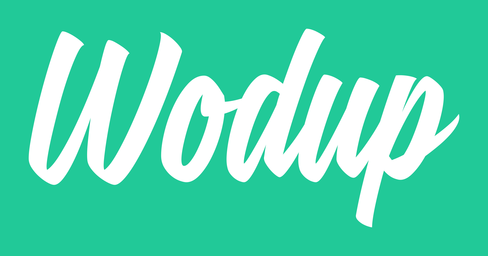
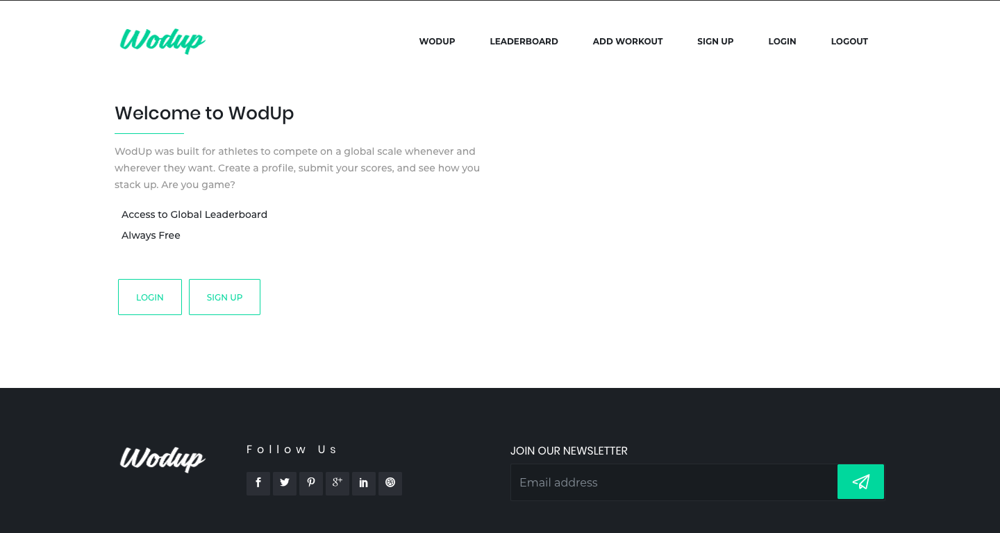
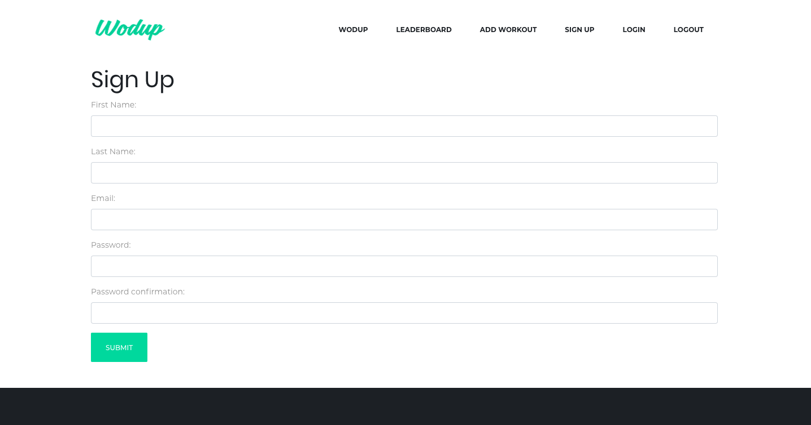
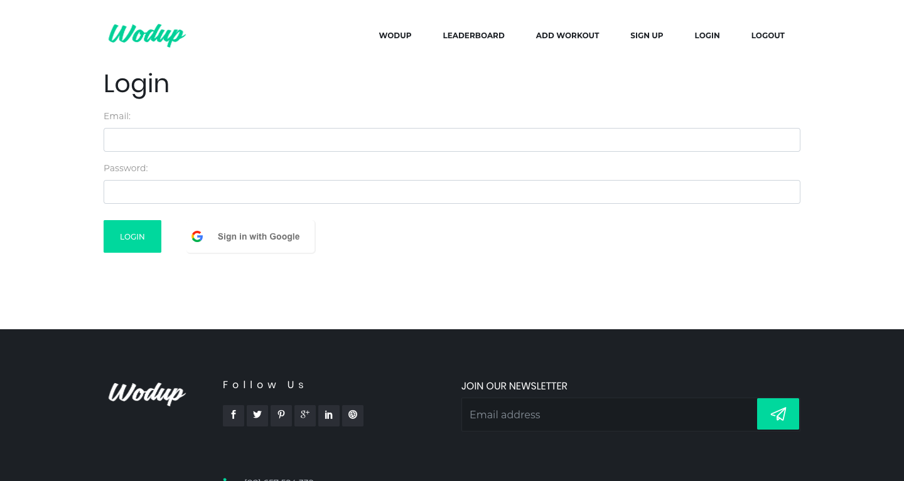
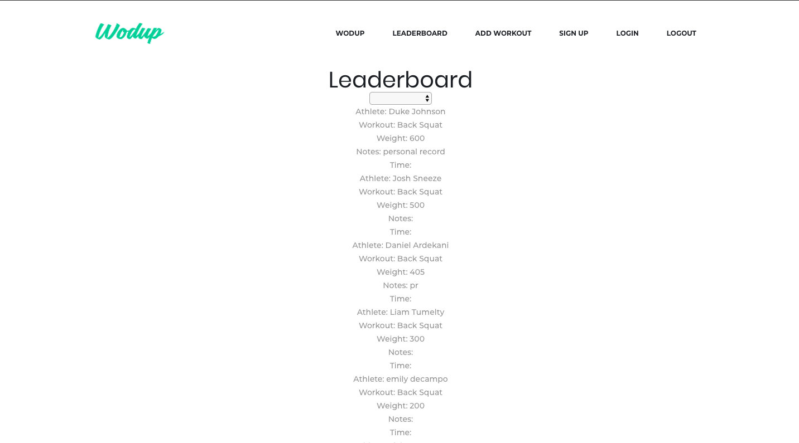
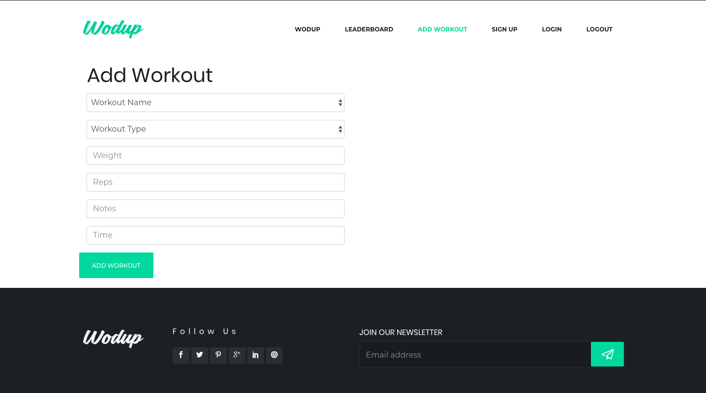

Daniel is an enterprise developer located in Baltimore, Maryland. Passionate about providing customers with supreme value quickly, Daniel has developed a passion for low code technologies that are both powerful and user-friendly such as Microsoft Dynamics, Power Apps, Power Automate, and Azure Cloud. Always looking to further his knowledge base, Daniel will be applying to graduate school in the fall to pursue his Master's in computer science.
Technical: Microsoft Office 365, Azure, SharePoint, PowerApps, Power Automate, Dynamics 365, PowerShell, SQL Server
Additional: Ruby, Rails, JavaScript, Vue.js, HTML5, CSS, PostgreSQL, Git, Testing, Pair-Programming, SQL, Data Visualization, Bootstrap, Material, RSpec, RESTful APIs, SalesForce
Education
Actualize Coding Bootcamp, Chicago, IL
Software Development, March 2019 – September 2019
-
Bootcamp: Completed the intensive, 4-month Actualize bootcamp and learned Ruby, Rails, JavaScript, Postgres, HTML, CSS, Bootstrap, and Vue.js. Learned how to think like a software engineer and gained the ability to tackle any new technology.
-
Capstone Project: Created web application for CrossFit athletes to track WODs (workout of the day), personal stats, connect with others, and submit scores and times against a global leader board that can be filtered by workout type, gender, age, country, and gym affiliate. The app was created using Ruby, Rails, Vue.js, and Postgres.
Skills: Ruby, Ruby on Rails, Vue.js, Bootstrap, HTML, PostgreSQL
Alvernia University, Reading, PA
Bachelor of Science in Business Management & Minor in Economics, May 2016
- 3.4 GPA
- Men’s Varsity Soccer
University of California- Irvine, Irvine, CA
Courses completed in Mobile Application Development, May 2018
- Introduction to Mobile Application Design and Development
- Introduction to Computer Programming Using C++
- Introduction to Programming using Java
- Java Programming I
PSA Financial- SharePoint Migration, November 19'
PSA Financial needed a solution to migrate its legacy file system into SharePoint. PSA required that each of their 25,000 files has its own site and standard template. I modified a SharePoint collection template and applied it using Azure Storage, runbooks, Logic App, and stored all of the site colletions under a SharePoint hub.
Skills: SharePoint, Azure Automation runbook, Azure Storage, Logic Apps
Hamilton Associates- Power Apps & SQL integration, November 19’
Hamilton was looking to move away from its legacy file maker to a more modern, user-friendly, and robust solution. To meet their requirements, I built a Power App with a modern design that enabled users to create, edit, and delete files. To pull documents into the application, I set up a data gateway to their on-premise SQL server.
Skills: Power Apps, Data Gateway, SQL Server
Office of the Assistant Secretary for Health (OASH)- ERM Project, March 19'
OASH required an ERM system with the capabilities of storing, routing, and tracing various document formats. OASH needed the ability to route documents internally and externally when working with outside agencies. I led requirements gathering meetings, developed workflows using BPMN, created and maintained documentation, and created user stories.
Skills: requirements, user stories, design, business analysis, HTML
Incite Automation, Baltimore, MD
Business Application Consultant, Nov 2019 – Dec 2019
-
Developed enterprise applications using Power Automate, PowerApps, and the Azure cloud platform.
-
Created Flows and Logic Apps to streamline historically slow and tedious business processes.
-
Developed SharePoint sites to customer specification and managed site and user permissions.
-
Created PowerApps to enhance user experiences manipulating data such as a SQL table or SharePoint list.
DATA FEDERAL, Columbia, MD
Business Analyst, Dec 2018 – Nove 2019
-
Build essential relationships with customers and stakeholders.
-
Elicit project requirements and design workflows using business processes model notation (bpmn).
-
Provide and document system analysis for customers with viable replacement options.
-
Create and maintain epics, user stories, features, and bugs in Azure backlog.
-
Create and maintain living requirements documents.
-
Develop, document and revise system design procedures, test procedures, and quality standards.
GOOD LIFE COMPANIES, Reading, PA
Director of Revenue Generation, Sep 2018 – Jan 2019
-
Created digital marketing lead generation program for Good Life independent financial advisers to expand advisory practice using SEO and SEM.
-
Created digital marketing department for advisors to leverage their personal brand.
-
Project manager and product owner of investment mobile app that would help advisor clients easily access financial data and create auto deposits into their investment accounts.
Digital Marketing Strategist, Aug 2018 – Sep 2018
-
Strategic digital marketing for the purposes of expanding Good Life Companies online presence and generating new lead sources.
Wealth Manager, May 2016 – Sep 2018
-
Helped clients with retirement, education, and insurance planning.
Development Projects

WodUp
Fitness web application for competitive athletes.

Wodup
Home screen.

WodUp
Sign up screen.

WodUp
Sign in screen.

WodUp
Global leader board displaying WodUp athletes rank

WodUp
Once logged in users can add a personal workout be ranked on the leader board.
-
Address
Baltimore, MD 21224
United States
{kind=link}
{kind=link}
{kind=link}
{kind=link}
{kind=link}
{kind=link}